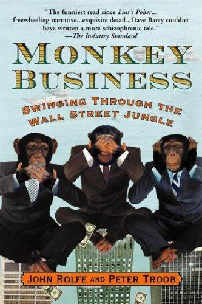

约翰·罗尔夫（John Rolfe）与彼得·特鲁布（Peter Troob）是1990年代美国顶尖商学院的应届毕业生，怀揣着征服华尔街的雄心，相继加入了当时炙手可热的投资银行DLJ（唐纳森、卢弗金和詹雷特公司）。《猴子把戏：闯荡华尔街丛林》（Monkey Business: Swinging Through the Wall Street Jungle）出版于2000年，由大华纳出版（Warner Books）发行，是两位亲历者对这段经历的忠实记录。全书采用独特的双人交替叙事——罗尔夫与特鲁布轮流讲述，以第一人称的坦诚将各自进入华尔街前后的憧憬与现实一并呈现，幽默辛辣，有时令人瞠目结舌。
书中揭示的华尔街生态与商学院课堂所描绘的精英世界大相径庭。在DLJ，分析师和助理们的日常是绵延不断的深夜会议、永无止境的PowerPoint修改，以及等级森严的内部文化——高级银行家可以随时打断任何人的私人计划，要求下属在48小时内从头准备一套厚达百页的招揽业务材料（Pitch Book）。两位作者以讽刺的笔法描绘了承销晚宴、招聘流程与客户公关背后的荒诞逻辑：那些精心维护的关系、豪华的招待开销，最终服务的不过是一笔笔可能根本不会落地的交易。书中对奖金文化、晋升机制以及"退出机会"（exit opportunities）的描写，既是对1990年代华尔街风气的精准素描，也是对年轻一代从业者的隐性预警。
这本书出版后被媒体广泛称为"《动物屋》遇上《说谎者的扑克牌》"——后者是迈克尔·刘易斯（Michael Lewis）1989年出版的华尔街内幕经典《Liar's Poker》。这一比较颇为恰当：《猴子把戏》同样是亲历者的真实告白，同样以黑色幽默解剖一个看似光鲜的行业，但叙事视角更加率直，更少文学雕琢，也因此更接近于普通读者对投资银行的真实想象。这本书在华尔街求职圈内长期流传，成为有志于进入金融行业的年轻人了解真实行业文化的参考读本。
对于关注商业、投资和组织文化的读者，《猴子把戏》提供的不是投资技巧或行业颂歌，而是一个供解剖的标本：激励机制如何塑造人的行为，精英机构的内部运作如何在华丽外表下暗含结构性矛盾。两位作者最终都离开了投资银行业，但他们留下的这份亲历记录——被打磨、被压榨、被系统消化——构成了这本书真正的价值所在。它的意义不在于劝人入行或劝人离开，而在于揭示当一套复杂的激励体系与年轻的野心相遇时，究竟会发生什么。